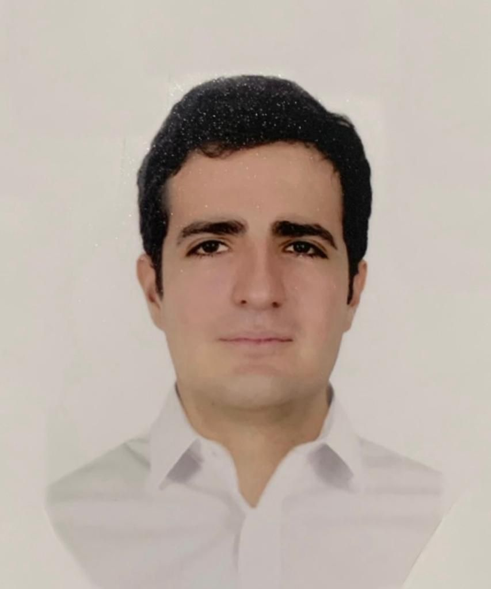

Jacobo Ramos Ramirez
PROFESSIONAL SUMMARY
Mechanical engineer with experience in design, manufacturing, and
maintenance management. Ambitious and capable of working independently or
in a team, with a strong sense of responsibility and honesty. I excel in
decision-making and possess creative abilities for innovation by applying
engineering techniques and tools. Prepared to utilize my skills and
passion to drive a company's mission forward.
WORK EXPERIENCE
February 2023 - August 2023
Junior Project Engineer | EYPM | San Luis Potosí, SLP
-
Updating blueprints for the L'Oréal plant, ensuring efficiency and
quality. Collaborating with production and maintenance teams to ensure
the accuracy and feasibility of updated blueprints.
-
Engineering project development for the upgrade of L'Oréal's production
lines.
-
Surveying and updating Instrumentation Diagrams for various L'Oréal
filling lines
April 2019 - April 2020
Mechanical Engineer | Rehabiductos S.A.S. (Colombia) | COL
- Designing asset maintenance plans.
- Compiling an inventory of assets.
- Participating in engineering project plans.
-
Overseeing the proper execution of preventive maintenance on equipment.
-
Developing plans for improvements and adjustments to ensure the proper
functioning of equipment.
-
Reporting and presenting the results of preventive and corrective
maintenance.
-
Risk management in engineering projects, overseeing final inspection and
evaluating temporary quality, ensuring compliance with established
standards.
-
Supplier management maintaining high quality standards and establishing
strong relationships to ensure excellence in products and effective
collaboration.
September 2018 - March 2019
Mechanical Engineer | AJOVER S.A.S. (Colombia) | COL
- Development of asset maintenance plans.
- Involvement in engineering project plans.
-
Creation of blueprints and manuals for utility systems in various
company plants.
-
Support in maintenance training sessions. Design and creation of CAD for
various equipment in the utility plant.
-
Conducted raw material testing to validate quality standards for the
final product.
EDUCATION
UNIVERSIDAD AUTÓNOMA DE SAN LUIS POTOSÍ
Master's Degree in Mechanical Engineering, Design and Manufacturing
Technologies
September 2020 - Present | San Luis Potosí, Mexico
-
Friction Welding Process Simulation using Finite Element Method (FEM).
- Gearbox Design considering mechanical requirements.
-
Manufacturing System Design for the production of a scissor-type jack.
UNIVERSIDAD TECNOLÓGICA DE BOLÍVAR
Bachelor's Degree in Mechanical Engineering
April 2019 | Cartagena, Colombia
- Advanced Microsoft Project Course.
- Minor in Industrial Maintenance.
SKILLS
-
Technical:
Knowledge of Microsoft Project, software CAD/CAM. Handling of office
package programs.
-
Language:
English level B2
-
Core Competencies:
High level of responsibility and analytical skills, Leadership Capacity
and Ability to work in a team.
Contact Me